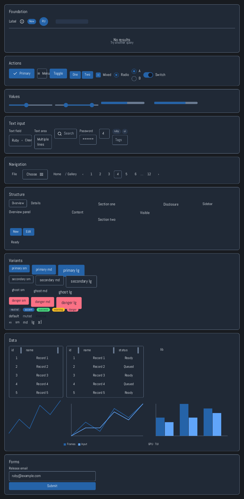
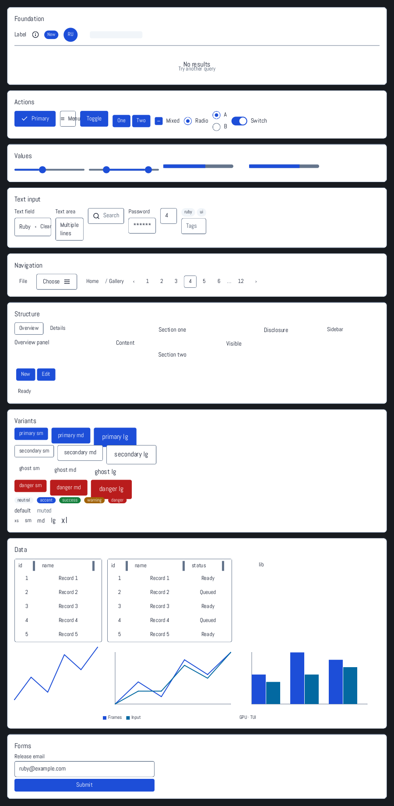
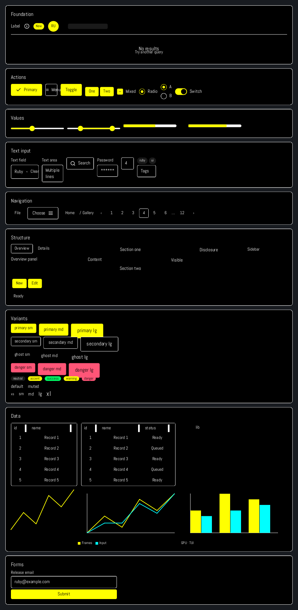

Ruby UI,
from one tree.
Build native GPU windows, deterministic PNG tests, and terminal interfaces with the same Ruby element tree.
- macOS
- Metal / OpenGL
- Linux
- Wayland / X11
- Windows
- Win32 / WGL
- Tests
- Pure Ruby pixels
- Terminal
- ANSI cells
The component surface
Controls, data views, charts, forms, overlays, focus, motion, and accessibility are rendered by Zaniah itself.



One pipeline, five useful views
Rendering features stay connected to input, semantics, testing, and performance.
Layout
Flex, Grid, sticky positioning, virtual lists, bidirectional scrolling, and keyed movement.
display: :gridText
OpenType shaping, fallback, Japanese line breaking, grapheme-safe editing, selection, and native IME.
TextBuffer.newInteraction
State styles, spatial focus, capture, popovers, modals, transitions, springs, and reduced motion.
.transition(:background)Semantics
A diffed accessibility tree feeds NSAccessibility, Windows events, and AT-SPI notifications.
window.accessibility_treeInspection
Press F12 for bounds, resolved styles, frame timing, and command counts. Reload Ruby files without dropping entities.
Zaniah::DevTools.attachA window is ordinary Ruby
The UI layer is opt-in. Use core elements alone, or load the component library when the application needs it.
require "zaniah/ui"
app = Zaniah::App.new
app.open_window(backend: :mac) do
Zaniah::UI::Button.new("Save")
.icon(:check)
.on_click { save }
end
app.run